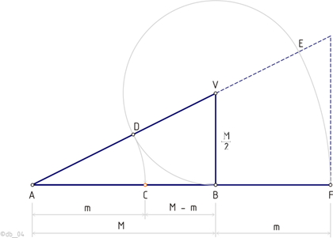
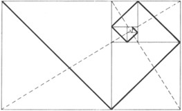
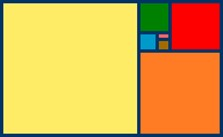
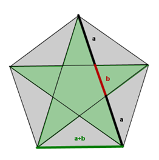
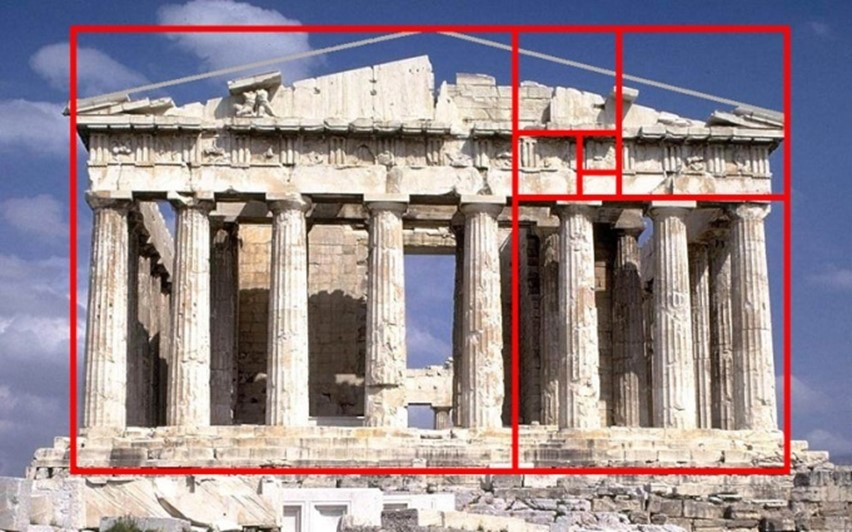
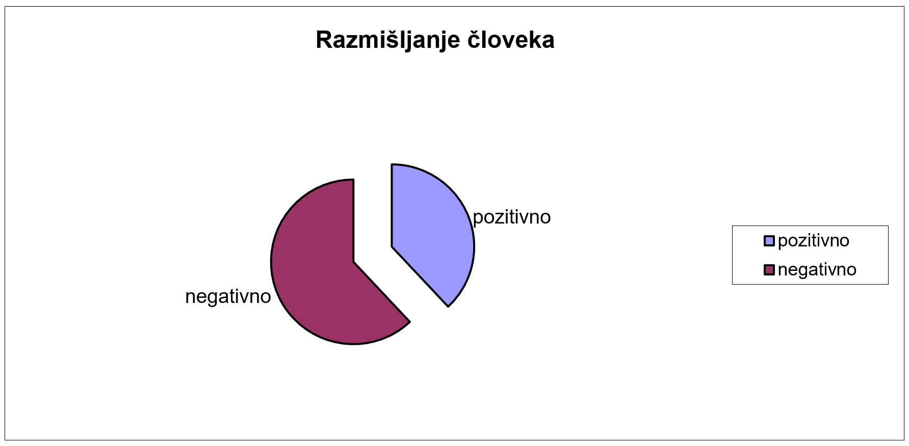
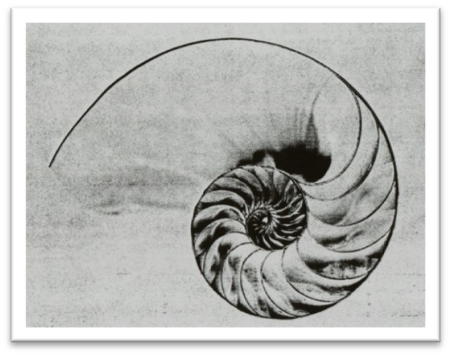
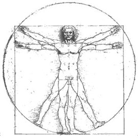
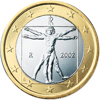

Zlati rez
Zlat rez je razmerje, ki ga lahko najbolje ponazorimo z presekom daljice na dva neenaka dela tako da je razmerje celotne daljice enako razmerju večjega dela proti manjšemu kot prikazuje spodnja slika.

Točko c imenujemo zlata točka, saj deli daljico AB v zlatem rezu. Po izračunu se izkaže, da je razmerje M:m vedno enako 1,61803398874989… število imenujemo število zlatega reza.
Metoda neprekinjene delitve ali širitve
Delitev daljice po metodi zlatega reza drugače imenujemo tudi metoda neprekinjene delitve, ker so vsi omenjeni deli daljice po parih (M - m, m; m, M; M, m + M) v stalnem sorazmerju. Metoda zlatega reza kot delitvenega postopka se pokaže predvsem v zaporedju dolžin delov daljice, in sicer kot:
m, M, m + M, m + 2M, 2m +3M, 3m + 5M, in tako dalje po zaporedju Fibonaccijevih števil.
Poenostavljen primer Širitve ali krčitve prikazuje slika6, s katero lahko definiramo zunanji in notranji zlati rez.

O notranjem zlatem rezu govorimo, ko moramo daljico razdeliti v zlatem rezu. Zunanji zlati rez pa pa je dopolnitev oziroma razširitev daljice, ki naj ustreza majorju do daljice , katere dopolnjeni odsek tvori s prejšnjim zlato razmerje.
Daljico AB presekamo v zlatem rezu (označenim s točko C), kadar leži točka C na daljici AB in jo deli na dva neenaka dela (AC in CB), pri čemer je razmerje med dolžino celotne daljice AB in daljšim delom daljice enako razmerju med daljšim in krajšim delom daljice.
Če podaljšamo v zlatem rezu (točki E) deljeno daljico AB za njen večji del, se zlati rez nove daljice (ED) nahaja v točki B, tj. v končni točki prejšnje daljice. Omenjeni postopek lahko poljubno ponavljamo.
Če po zlatem rezu razdelimo pravokotnik in skozi nastale pravokotnike narišemo diagonale, tako da se vse diagonale povezujejo med seboj, dobimo zlato spiralo kot prikazuje spodnja slika.

Zlati rez pa je mogoče izraziti s številkami, tako dobimo matematično konstanto, ki se ji navadno reče zlato število.
Zelo znan je tudi zlati pravokotnik, katerega stranici sta v zlatem razmerju. Prav tako je tudi njegova dolžina razdeljena v enakem razmerju in nato tudi vsi nastali pravokotniki.

Poznamo tudi zlati petkotnik, v tem geometrijskem liku najdemo zlati rez, kjer se dve diagonali sekata. Diagonali se razdelita prav v zlatem razmerju.

Zgodovina zlatega reza
Uporaba zlatega reza se pojavi že v času Egipčanov pri Keopsovi piramidi. A dokazano je, da je do tega prišlo naključno in ne z znanjem o zlatem rezu. Grki pa so že poznali zlati rez, uporabili so ga pri gradnji Partenona (447 p.n.š.), ki ga je izdelal kipar Phidias. Veliko grških matematikov je pisalo o zlatem rezu.
Evklid (365-275 p.n.š.) je prvi v svojem delu Elementi, predstavil idejo zlatega reza, a skoraj zagotovo je bilo znanje o zlatem rezu že pred njim. V Teodorjevem delu – Knjiga II. – je zlati rez prvič uporabljen. Z Zlatim rezom pa so se ukvarjali še Pitagora (582-496 p.n.š.), Evdoks (410-347 p.n.š.), Platon (427 -347 p.n.š.) in Hipsiklej (190-120 p.n.š.). V rimskem času pa je človeške proporce omenil Vitruvij (1.stoletje p.n.š.). Prvi, ki naj bi odkril da je zlati rez iracionalno število, je bil Hippasus iz Metaponta (Italija, 500 let p.n.š.)
Srednji vek velja bolj za prehodno obdobje za matematiko kot pa obdobje odkrivanj. A za zlati rez je zelo pomembno tudi to obdobje, saj Leonardo Fibonacci (1170-1250) odkrije zaporedje, ki je zelo povezano z zlatim rezom.
Do renesanse so antične ugotovitve bile že pozabljene, zato se je odkrivanje ponovno začelo. Navdušenec zlatega reza je bil Luca Pacioli (1445-1514). On je poimenoval zlati rez De Divina Proportione, tako naslovi tudi svojo delo, ki pa je sestavljeno iz treh knjig. V prvi knjigi piše lastnosti in razložil zakaj se mu zdi božanski. V drugi knjigi opisuje pravilne poliedre, v tretji pa o uporabi v umetnosti. Leonardo da Vinci (1452-1519) je bil prav tako navdušen nad zlatim rezom, prav Pacioli naj bi ga navdušil. Leonardove slike so se tudi pojavile v delu De Divina Proportione. Kompozicija mnogih Leonardovih slik je narejenih v zlatem rezu. Kot na primer Vitruvijev človek, Zadnja večerja, Mona Liza, ... Leonardo je tako kot Vitruvij preučeval človeške proporce in zlati rez poimenoval sectio aurea. Današnje ime je uporabil Martin Ohm (1792- 1872) šele leta 1826.
Adolf Zeising (1810-1876) je raziskoval zlati rez v naravi in umetnosti, svojega dela ni dokončal, a razmerje zlatega reza je vpeljal v teorijo arhitekture, v sredini 19. stoletja. Tudi v psihologiji se pojavi zlati rez, ko je Gustav Theodor Fecher (1801-1887) ugotavljal, kateri pravokotnik ljudje izberejo za najlepšega. Izbrali so zlati pravokotnik. Zlati rez pa se pojavlja tudi v glasbi.
Uporaba zlatega reza
Zlati rez pa ni le delitev daljic, v umetnosti se izkaže kot proporc, ki nam prinese harmonijo. Harmonija in všečnost je bila potrjena tudi v psihologiji. Ko je Gustav Theodor Fecher ugotavljal, kateri pravokotnik ljudje izberejo za najlepšega so anketiranci izbrali zlati pravokotnik. Psihologi so ugotavljali, da človek ne razmišlja 50–odstotno pozitivno in 50-odstotno negativno, ampak 62-odstotno negativno in 38-odstotno pozitivno (prikazano na spodnji sliki). Ti dve številki pa sta v zlatem razmerju. Zlati rez pa najdemo še v glasbi, zgradbi človeka in zgradbi ostalih živih bitij.

Zlati rez v naravi
Zlata spirala se na primer pojavi pri brodnikih (slika11). A takih primerov je še veliko in se jih niti ne zavedamo. Zlati rez najdemo še v sončničnih semenih, saj so semena razporejena v 34 spiralnih krivulj v smeri urinega kazalca, ter v 21 spiralnih krivuljah v obratni smeri urinega kazalca. Podoben primer je tudi ananas na katerem so luske na olupku razporejene v 13 diagonalah v eni smeri in 8 diagonalah v drugi smeri. Cvetni listi navadne marjetice si skoraj vedno sledijo s Fibonaccijevem razmerju 21/34.
ZLati rez v umetnosti
Ta harmoničen proporc umetniki radi uporabijo v svojih delih. Že stari Egipčani so uporabljali zlati rez v arhitekturi in sicer pri Keopsovi piramidi. Čeprav ni dokazano, da so Egipčani imeli dovolj znanja tako gradnjo s pomočjo zlatega reza. Kasneje se v arhitekturi zlati rez pojavi še pri Partenonu. Leonardo da Vinci je v veliko svojih slik uporabil zlati rez. Uporabil ga je pri Moni Lizi, Zadnji večerji.
Zlati rez v glasbi
Na osnovi kadence, od tonike do dominante in spet nazaj, je napisana vsa zgodnja klasična glasba. Da bi skladbo poživeli, saj je to čez čas postalo dolgočasno, so postavili dominanto prav število phi. Torej, če je kadenca dolga 8 tonov, je dominanta dosežena prav v 5 tonu. Po tem so se zgledovali znani skladatelji npr. Debussy, Bartok, Schubert. Tudi v moderni glasbi se pojavi zlati rez (Fools garden - Lemon tree, Rihanna- Umbrella), kar pa še ne pomeni da je v vseh popularnih pesmih zlati rez. Zanimivo je tudi, da ima klaviatura 13 tipk (7. člen Fibonaccijevega zaporedja) od tega 8 belih ( 6. člen zaporedja) in 5 črnih (5. člen).
Zlati rez pri človeku
Že rimski arhitekt Vitruvij je proučeval zlati rez na zgradbi človekovega telesa. Za njim pa je nadaljeval renesančni slikar, izumitelj in naravoslovec Leonardo da Vinci. Leonardo se je zgledoval po Vitruviju in napisal svoje najznamenitejše delo na področju matematike , to je delo Razmerja človeškega telesa po Vitruviju. Vitruvij je menil, da se idealna razmerja človeškega telesa, ki ima navzven iztegnjene roke in noge, do popolnosti prilagajajo v geometrični telesi kroga in kvadrata. Leonardo se z njegovo skico ni popolnoma strinjal, zato je na podlagi svojih opazovanji in raziskovanj skiciral svojo. To skico (slika4) pa poznamo skoraj vsi, nahaja se tudi na evropskem kovancu.
Vitruvijev človek, kot je poimenovana Leonardova skica, je zelo natančna in na njej lahko najdemo veliko zlatih razmerij. Popek skiciranega človeka je prav v središču kroga. Če pa pogledamo kje se nahaja popek v kvadratu, opazimo, da je na taki višini, ki kvadrat razdeli na zlati rez.
